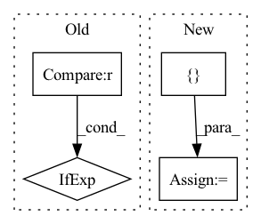

Pattern ID :322
Before Change
h = h.view(-1, 8192)
out = h if feature_layer == 5 else None
h = self.relu(self.fc6(h))
out = h if feature_layer == 6 and out == None else out
h = self.dropout(h)
h = self.relu(self.fc7(h))
out = h if feature_layer == 7 and out == None else outAfter Change
self.relu = nn.ReLU()
def forward(self, x):
f_list = []
h = self.relu(self.conv1(x))
h = self.pool1(h)
f_list.append(h)
In pattern: SUPERPATTERN
Frequency: 3
Non-data size: 4
Instances Fragment ID: 1028847
Project Name: wamawama/wama_modules
Commit Name: b7fce2569c27fcdb5a4039c452b821fc908997a0
Time: 2022-11-10
Author: wmy19970215@gmail.com
File Name: wama_modules/thirdparty_lib/C3D_yyuanad/c3d.py
M Class Name: C3D
N Class Name: C3D
M Method Name: forward(2)
N Method Name: forward(3)
M Parent Class: nn.Module
N Parent Class: nn.Module
M File Name: wama_modules/thirdparty_lib/C3D_yyuanad/c3d.py
N File Name: wama_modules/thirdparty_lib/C3D_yyuanad/c3d.py
M Start Line: 40
M End Line: 67
N Start Line: 35
N End Line: 59
Before Change
text_emo_vecs_origin = self.textEmoEmbs(torch.LongTensor(list(range(self.num_classes))).to(self.device))
text_emo_vecs = text_emo_vecs_origin.unsqueeze(0).repeat(batch_size, 1, 1)
text_attn_weights = self.attention(output_text, text_emo_vecs)
logits = text_attn_weights if logits is None else logits + text_attn_weights
if "a" in self.modalities:
output_audio, _ = self.RNNs[1](X_audio)After Change
batch_size = X_text.size(0)
text_emo_vecs_origin = self.textEmoEmbs(torch.LongTensor(list(range(self.num_classes))).to(self.device))
logits = None
scores = []
if "t" in self.modalities:
output_text, _ = self.RNNs[0](X_text)
output_text = output_text[:, -1, :]
text_emo_vecs = text_emo_vecs_origin.unsqueeze(0).repeat(batch_size, 1, 1) Fragment ID: 1028843
Project Name: wenliangdai/modality-transferable-mer
Commit Name: eaf8a7cf6ec5b7ed6389b9d73cd6bb31fc1576c2
Time: 2020-06-10
Author: wenliang.dai.1995@gmail.com
File Name: src/models/temp.py
M Class Name: EmotionEmbAttnModel
N Class Name: EmotionEmbAttnModel
M Method Name: forward(4)
N Method Name: forward(4)
M Parent Class: nn.Module
N Parent Class: nn.Module
M File Name: src/models/temp.py
N File Name: src/models/temp.py
M Start Line: 71
M End Line: 94
N Start Line: 74
N End Line: 105
Before Change
if self.training and self.layer_dropout > 0:
to_drop = torch.empty(len(self.blocks)).uniform_(0, 1) < self.layer_dropout
blocks = [block for block, drop in zip(self.blocks, to_drop) if not drop]
blocks = self.blocks[:1] if len(blocks) == 0 else blocks
block_args = list(map(lambda x: {"f_args": x[0], "g_args": x[1]}, block_args))
return _ReversibleFunction.apply(x, blocks, block_args)After Change
self.blocks = nn.ModuleList([ReversibleBlock(f=f, g=g) for f, g in blocks])
def forward(self, x, **kwargs):
x = torch.cat([ x, x = _ReversibleFunction.apply(x, blocks, args)
return torch.stack(out.chunk(2, dim=-1)).sum(dim=0)
Fragment ID: 1028839
Project Name: lucidrains/sinkhorn-transformer
Commit Name: d5b9c649e59290b15c15f85d0bb182cb20b699fb
Time: 2020-04-15
Author: lucidrains@gmail.com
File Name: sinkhorn_transformer/reversible.py
M Class Name: ReversibleSequence
N Class Name: ReversibleSequence
M Method Name: forward(2)
N Method Name: forward(2)
M Parent Class: nn.Module
N Parent Class: nn.Module
M File Name: sinkhorn_transformer/reversible.py
N File Name: sinkhorn_transformer/reversible.py
M Start Line: 133
M End Line: 142
N Start Line: 161
N End Line: 174